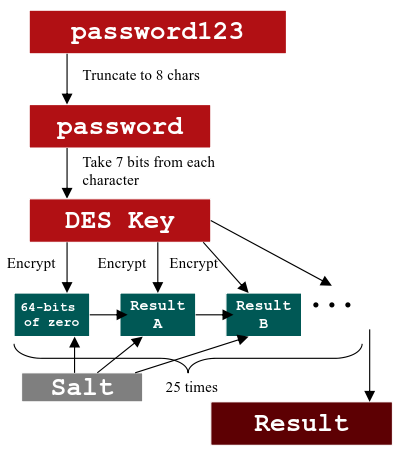
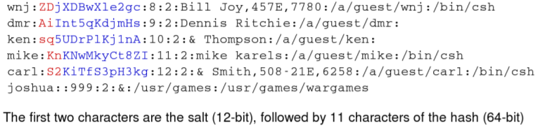

DES algorithm
1. Start with user's password
2. the user's password is truncated to be only eight characters long at most
3. a bit is removed from each character to turn them into their 7-bit ASCII representations, yielding 56 bits
4. Use resulting 56-bit key to DES encrypt a constant block of 64 bits all set to zero 25 times. This encryption process is repeated 25 times using DES Key+previous Result+Salt
◇
Salt is a two-character string, if more are truncated (the 12 bits of the Salt is used to perturb the DES algorithm) chosen from the character set "A-Z", "a-z","0-9","."(period) and "/".
The Salt is generated in a pseudorandom fashion, is used to perturb the crypto operation, creating an interim result. That interim result is encrypted again using the same password-derived 56-bit DES key, again perturbed by the salt. The encryption process is applied 25 times.
5. Results are Base64 encoded and stored as a sequence of 13 ASCII characters(
2 Salt characters+
11characters of the perturbed Password Hash)
• Some UNIX and Linux variations alter this process by starting with a nonzero block of data to encrypt. Some also vary the number of rounds of encryption applied, going higher than 25